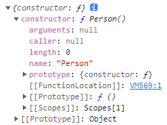
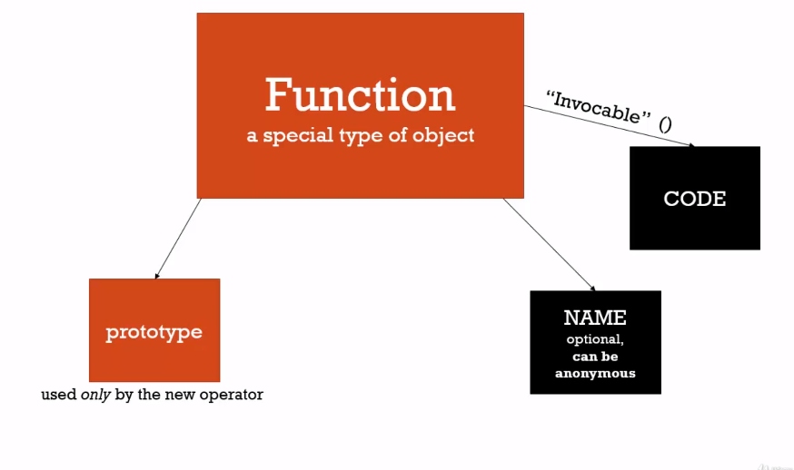

function-constructors-and-prototype
前一堂課介紹了如何透過關鍵字 new 來建立物件，這堂課將進一步介紹 function construsctors 和 .prototype
Prototype
延續上一堂課的範例，如果透過 new 關鍵字來建立的物件，並使用 __proto__ 來查看它的 prototype 會是什麼呢 ?
1 | function Person(firstname, lastname) { |
我們會得到一個名為 Person 的空物件

但這到底是如何形成的呢 ?
之前的課程有提到過，在一個函式被件建立時，它會有幾個預設的屬性，函式內的程式碼 - code、匿名函式不會有的 - name 和一個只被用來產生物件的 function constructor 才會有的屬性 - prototype

但這裡很弔詭的是，函式的 prototype 屬性並不是這個函式的 prototype，而是透過 new 建立的物件的 __proto__ 會自動指向這個函式的 prototype 屬性，這裡我們透過一個範例來了解
1 | function Person(firstname, lastname) { |
這裡我們將一個函式 getFullName 指派給 Person.prototype，接著呼叫 john.getFUllName() 時，因為 john 本身並沒有這個方法，因此會沿著 prototypal chain 尋找，這時會找到 Person.prototype，所以我們會得到 return 的結果。
那麼我們是不是也可以將這麼方法直接在函式 Person 建立時就賦予給它呢 ?
當然可以，因為透過 new 來建立物件時會呼叫這個函式，並將 this 指向新的空物件，就和屬性一樣，方法也會出現在新建立的物件中
1 | function Person(firstname, lastname) { |
記憶體占用
但這裡不一樣的是，如果把方法 getFullName 在函式建立時就賦予給它，每當我們透過 new 建立一個物件時，這些物件都會有自己的 getFullName 方法，所以自然會有各自占用的記憶體空間 ; 但如果透過 Person.prototype 賦予時，在呼叫物件的方法時，因為找不到，所以會沿著 prototypal chain 找到賦予在函式 prototype 的方法，藉此減少相同方法占用記憶體空間。
後續新增方法
透過函式的 prototype 新增方法的方式甚至可以在物件被建立後追加，不需要因為後續新增方法而去修改先前建立的物件
1 | function Person(firstname, lastname) { |
注意事項
在 JavaScript 透過 function constructor 的方式建立物件時，我們需要在呼叫函式前加上一個關鍵字 new，但如果我們漏掉關鍵字 new，整個程式碼還是可以執行的，只是這個變數會被賦予函式 return 的值，如果沒有回傳任何資料，這個值就會是 undefined，因為這也是一般呼叫函式的方式
1 | function Person(firstname, lastname) { |
為了盡量避免發生這種錯誤，所以在開發時通常會一個慣例，那就是如果這個函式是一個 function constructor，那命名上就會使用大寫開頭 capital letter (person –> Person)，藉此提醒我們在透過這類函式建立物件時，記得加上關鍵字 new。